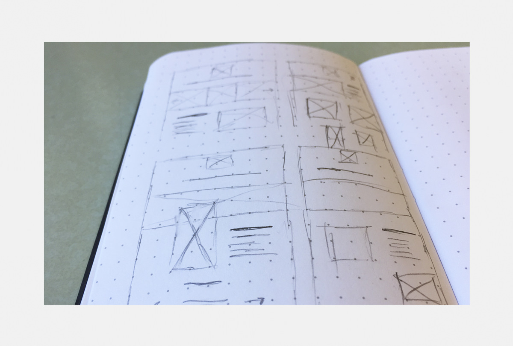
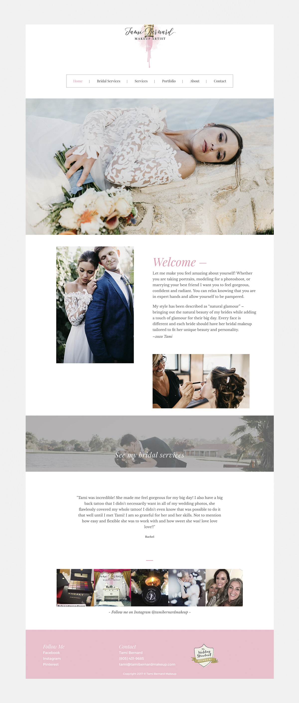

Tami Bernard was a new makeup artist on the Central Coast of California. She was looking to brand herself on the web to begin outreaching to new clients, mainly brides. I created a Wordpress website for her so she could easily manage it and update it at a later time.
The goal for the website was to use large images to show off the makeup on the brides. Implementing Instagram at the bottom of each page was also an important aspect so the site would always have new photos.
To reflect my sketches, I ended up using a large photo of a bride in a high-end designer dress to give a high class feeling. I also opted to include a photo of the same bride next to her groom to help brides picture themselves getting married wearing Tami's makeup. Towards the end of the site you can see her Instagram on every page to show what she's been up to along to get brides to follow her.
See the site → Tami Bernard Makeup
